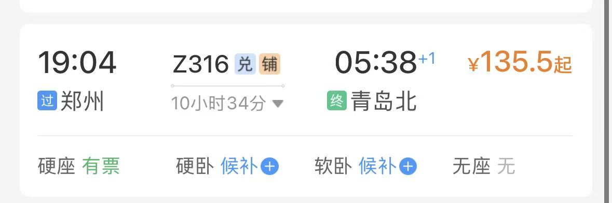
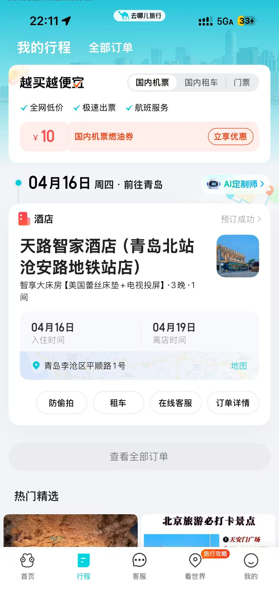

🎒 行前物品准备
证件与酒店信息：


Day 1：青岛初印象 · 漫步与灯光
-
05:38 - 12:00
抵达北站、早市过早、酒店补觉。建议 13:00 左右出发。
-
☀️ 方案 A：晴空万里（老城建筑与海滨漫步）
路线：天主教堂 → 鲁迅公园 → 琴屿路
亮点：先去圣弥厄尔大教堂拍欧式大片；随后去鲁迅公园走走红礁石海岸；傍晚一定要在琴屿路等日落，那里有“最孤独的树”和极美的海边公路，非常有电影感。☁️ 方案 B：天气一般（博物馆人文与建筑）
路线：啤酒博物馆 → 八大关
亮点：室内参观啤酒博物馆不受天气影响；随后去八大关看风格各异的异国建筑（花石楼、公主楼等），即使阴天，那里的林荫大道和老建筑也很有氛围。 -
19:30
前往 第三海水浴场。这里是观赏青岛浮山湾灯光秀的最佳位置之一，感受现代青岛的璀璨夜景。
-
20:30
晚餐建议：从下方美食清单挑选。若在三浴附近，可以考虑去台东步行街或江西路附近的餐厅。
🍴 第一天待选美食 (已按特色整理)
* 小贴士：吃海鲜记得配点大蒜，海边温差大注意保暖。
Day 2：漫步山海 · 醉美小麦岛
-
上午
在酒店充分休息或在附近寻找地道小吃。建议中午 13:00 前后出发。
-
13:30 - 15:30
前往 台东步行街。这是青岛最热闹的商圈，可以逛逛各种创意小店，顺便在那里解决午餐或下午茶。
-
16:00 - 17:30
前往 燕儿岛山公园。这里的海边木栈道非常有层次感，一侧是断崖礁石，一侧是大海，非常适合并肩漫步，空气里都是海的味道。
-
18:00 - 19:30
核心行程：小麦岛看日落
从燕儿岛沿着海岸线步行即可到达。在落日草坪坐下，听着流浪歌手的民谣，看太阳一点点沉入海平面，天边染上橘子色的晚霞。 -
晚上
从岛上出来后，可以去附近的中联广场或万象城。那里有很多环境优雅且不费牙的精致餐厅，适合舒舒服服吃顿大餐。
🌟 Day 2 游玩贴士
Day 3：海边日出 · 漫画老城 · 崂山寻径
-
05:10 - 07:30
日出与赶海：建议前往 石老人海水浴场 或 雕塑园海滩。 4月中旬日出约在 5:20 左右。看完日出趁着退潮，可以体验赶海（记得带上你的创可贴，礁石容易划伤）。
-
09:00 - 11:00
童话老城打卡：前往 龙江路（宫崎骏漫画墙）。 这里满墙的龙猫、千与千寻涂鸦非常可爱。接着步行去附近的 大学路红墙（网红拐角）拍一张经典照片。
-
12:30 - 17:30
海上仙山：崂山风景区（仰口线）
建议选仰口游览区，这是崂山唯一能看“山海相连”最震撼的地方。 乘坐索道上山，打卡“寿”字峰，最后到达天苑，俯瞰整个仰口湾。 -
18:30
晚餐补充：从崂山回来，一定要买个比脸还大的 王哥庄大馒头！ 晚上可以去吃顿正宗的崂山菇炖鸡，或者找一家渔家乐，尝试一下海肠捞饭。
💡 第三天深度建议
Day 4：漫步余味 · 踏上归途
-
上午
弹性休整：睡到自然醒，根据第三天晚上的心情决定。
· 选项 1：去补打卡前几天因天气没去成的景点。
· 选项 2：去当地超市（如利群、盒马）买点地道特产（钙奶饼干、崂山可乐、即墨老酒等）。
· 选项 3：在酒店附近散散步，整理这几天的照片和行李。 -
11:30 - 13:00
告别午餐：找一家评价好的鲁菜馆或海鲜饺子馆。 建议尝试：全家福水饺（五颜六色很漂亮）、炸肉或京酱肉丝（补充蛋白质且不费牙）。
-
14:00+
返程：回酒店取行李。由于酒店就在沧安路地铁站（1号线），距离青岛北站仅一站路，预留 30-40 分钟出发即可。
-
下午/傍晚
乘坐高铁返回郑州。在车上休息，回顾这趟浪漫的听海之旅。
✅ 离青前最后确认
🍽️ 青岛必吃美食打卡清单
精选美食清单，吃海鲜大餐的同时兼顾高蛋白与轻松咀嚼，打卡一家勾选一家！
✅ 你的心愿单
✨ 独家补充推荐
💡 贴心点单提示：
- 青岛传统海鲜做法基本不涉及奶制品，可以放心大胆吃。
- 点部分羹汤类（如海鲜疙瘩汤）时，如果不想要蛋黄，记得提前叮嘱老板不加或者只要蛋清。
- 吃海鲜时适量搭配点大蒜或醋，对肠胃更友好。